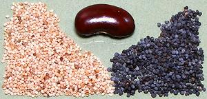
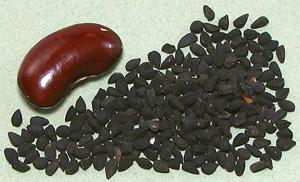
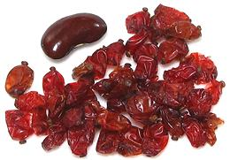
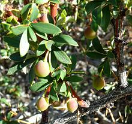
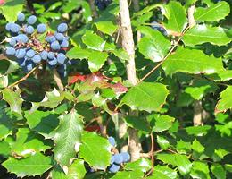
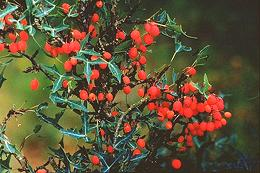
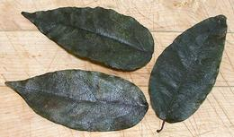
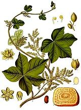

SAFARI
Users
Poppy Seed
 [Family Papaveraceae]
The poppy of culinary interest is the Opium Poppy, Papaver somniferum, the tiny seeds of which are used on baked goods in the U.S. and in curries and other dishes in India. Poppy seed oil is used for cooking in some parts of the world, but for slow drying artist's oil paints in North America.
In Western cooking, black poppy seeds are presumed. In Indian cooking, where they are used both for flavoring and as a thickener, the somewhat milder white variety is presumed. Opium is harvested from the same seed pods but by time the seeds are mature there is negligible opium in the pods - however, do avoid poppy seed rolls and the like before a drug test - you can be found positive. Details & Cooking.
Pictured at the top of the page is P. Eschscholzia californica,
the California poppy, which is supposed to have a mild opiate effect when
the dried sap is smoked, but is not supposed to be addictive. I haven't
tried it so I can't confirm or deny. Seeds of the California Poppy have
been used in cooking, but the yield per pod is relatively small.
Nigella
 [Kalonji (Hindi); Charnushka (Russia, U.S. Armenian); Cörek otu (Turkish); Siyah Daneh (Persian); Kalo Jeera, Kalojira, Black Cumin (Bengali only, otherwise improper), Black Caraway (improper); Onion Seed (improper); Nigella sativa]
This member of the mostly toxic Ranunculales order is native to
South and Southwest Asia. The seeds, which look a bit like the totally
unrelated onion seeds, are used as a spice in India, the Middle East,
Near East, Anatolia, Caucasus, Greece and Egypt. They have a strong,
aromatic and slightly bitter taste.
Details and Cooking.
Barberry
 [Common Barberry, European Barberry; Zereshk (Persian for dried); Kotsakburi (Georgian); Berberis (Arabic); Agracejo (Spanish); Berberis vulgaris | Bidaneh (Persian); Berberis integerrima (seedless variety)]
The fruit of this shrub is rather tart from being high in vitamin C.
It was once widely used in Europe as a souring agent, but has been
replaced by citrus fruits due to difficulty harvesting - lots of very
sharp spines on the branches. The berries are still made into jams to
some extent. Today, this fruit is most popular in Iran, particularly
as a topping for rice pilavs, but also with chicken and meats. They
are also used in Georgia, Armenia, Afghanistan and India.
Details and Cooking.
Calafate Barberry
 [Magellan Barberry; Berberis microphylla | Michay, Calafate; Berberis darwinii]
This plant is native to the south of Argentina and Chile, particularly
Patagonia. It grows to 3 to 4 feet high and has arching branches with a
lot of very sharp spines on them. It fruits fairly heavily, with the
fruit maturing to a blue-black color. The plant is farmed commercially
for its fruit which is eaten fresh and made into jams.
Photo by Pawel Drozd distributed under license Creative
Commons
Attribution-ShareAlike v3.0 Unported.
Oregon Grape
 [Mahonia aquifolium alt Berberis aquifolium | Creeping Oregon Grape, Creeping Barberry; Mahonia repens]
This shrub, closely related to the Barberries, is widely planted as a
decorative here in California and up the coast to Washington state. Few
realize the berries are edible, though they are rather tart. They were
used by the Northwest Indians mixed with sweeter fruit, particularly
Salal berries. Today they are
still used to make jams, and still usually mixed with sweeter fruit.
The low sub-shrub creeping species is used similarly, but tolerates
hotter, dryer climate and ranges from Canada down through Arizona,
New Mexico and parts of California and Nevada.
Photo by Meggar distributed under license Creative
Commons
Attribution-ShareAlike v3.0 Unported.
Chaparral Berry
 [Agarita, Agrito, Algerita, Currant-of-Texas, Wild Currant; Mahonia trifoliolata alt Berberis trifoliolata]
This shrub, closely related to the Barberries, is native to Texas,
Arizona and New Mexico in the Southwest United States. It is widely
cultivated in desert regions. The berries are harvested between April and
May. The sweet-sour fruit is used to make fruit drinks, a fruit wine
(Agarita), jams and jellies.
Photo by U.S. Department of Agriculture = public domain.
Yanang Leaf
 [Bai Yanang (Issan, Laos); Voar Yeav (Khmer); Day Suong Sam (Thai); Tiliacora Triandra]
This climbing plant is native to northast Thailand (Issan), Laos, Vietnam and Cambodia. In Issan, leaves are used particularly in a soup called Kaeng no Mai or Kaeng Lao. It is not used as a flavoring element but as a thickener. Leaves are rubbed between the hands under water until all the green is in the water and the fibers can be removed. The water is called Nam Yanang (yanang water). It is similarly used in Cambodian Sour Soup (Samlar machu). In Vietnam it is used to make a jelly called Suong Sam.
The photo specimens are very dark because they were formerly frozen.
In life, the leaves are a medium green. The photo specimens were about
4-1/8 inches long and 1-7/8 inches wide. They were purchased frozen
from an Asian Market in Los Angeles (Alhambra) for 2016 US $1.09 for
3.5 ounces. Canned Yanang Leaves Extract is often used in Southeast
Asia, and Aroy-D brand in 14 ounce cans is available in North America.
Curare Family
 [family Menispermaceae]
The only culinary application for this family of Buttercups is in
acquiring animal based food. From M. Curarea and other species of
this family South American natives acquired the extreme neuromuscular
toxin curare, used to poison hunting darts. Substances extracted from
members of this plant family are the source for a number of important
medicinals.
Watercolor by Franz Eugen Koehler for Koehler's
Medizinal-Pflanzens, copyright expired